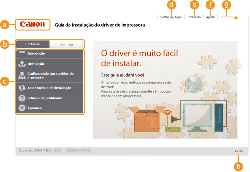
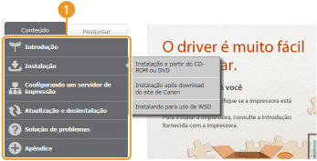
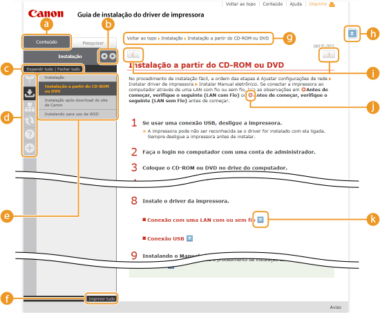
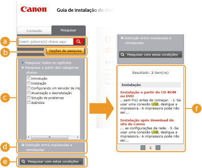
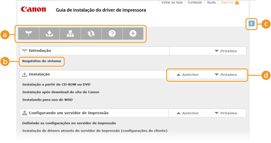

0KUF-00W
O Guia de Instalação é dividido em várias telas, que apresentam conteúdos diferentes.
Esta página aparece quando o Guia de Instalação é inicializado.

 Logotipo Canon
Logotipo CanonClique para retormar ao topo da página de qualquer outra página.
 Guia [Conteúdo]/ Guia [Pesquisar]
Guia [Conteúdo]/ Guia [Pesquisar]Clique para alternar a exibição entre a guia [Conteúdo] e a guia [Pesquisar].
 Conteúdo
ConteúdoExibe os títulos dos capítulos ( ). Passe o cursor do mouse sobre um dos títulos para exibir os tópicos do capítulo à direita. Clique em um tópico para exibir a página correspondente.
). Passe o cursor do mouse sobre um dos títulos para exibir os tópicos do capítulo à direita. Clique em um tópico para exibir a página correspondente.
). Passe o cursor do mouse sobre um dos títulos para exibir os tópicos do capítulo à direita. Clique em um tópico para exibir a página correspondente.
 [Voltar ao topo]
[Voltar ao topo]Clique para retormar ao topo da página de qualquer outra página.
 [Conteúdo]
[Conteúdo]Clique para exibir os títulos de todos os tópicos do Guia de Instalação.
 [Ajuda]
[Ajuda]Clique para exibir informações sobre como visualizar o Guia de Instalação, como realizar uma pesquisa e outras informações.
 [Imprimir]
[Imprimir]Clique para imprimir a página de tópico em exibição.
 [Aviso]
[Aviso]Clique para visualizar informações importantes que você deve saber ao usar a impressora.
As páginas de tópicos contêm informações sobre como configurar e usar a impressora.

[Conteúdo]Os ícones de capítulo e títulos de tópico são exibidos nesta guia.
/
A guia [Conteúdo] pode ser ampliada e reduzida.
[Expandir tudo]/[Fechar tudo]Clique em [Expandir tudo] para exibir todas as subseções de todos os tópicos. Clique em [Fechar tudo] para fechar todas as subseções de todos os tópicos.
Ícones dos capítulosClique em um ícone de capítulo para navegar até o começo do capítulo correspondente.
TópicosExibe os tópicos do capítulo selecionado. Se "+" for exibido no tópico, clique nele para exibir as subseções daquele tópico. Clique em "-" para fechar os tópicos expandidos.
[Imprimir tudo]Todas as páginas do capítulo selecionado são abertas em uma janela separada. Elas podem ser impressas se necessário.
NavegaçãoMostra o tópico de capítulo que você está visualizando no momento.

Clique para retornar ao topo da página.

 /
/Clique para exibir o tópico anterior ou o seguinte.


Clique para pular a página correspondente. Para retornar à página anterior, clique em [Voltar] no seu navegador da web.

Clique para exibir as descrições detalhadas ocultas. Clique novamente para fechar as descrições detalhadas.
Esta guia contém uma caixa de texto para realizar uma pesquisa e encontrar a página que você está procurando.

[Inserir palavra(s)-chave aqui]Digite uma ou mais palavras-chave e clique em  para exibir os resultados da pesquisa em uma lista. Utilize uma frase para encontrar as páginas que contêm todas as palavras da frase. Para encontrar a frase exata, coloque aspas no início e final da frase.
para exibir os resultados da pesquisa em uma lista. Utilize uma frase para encontrar as páginas que contêm todas as palavras da frase. Para encontrar a frase exata, coloque aspas no início e final da frase.
para exibir os resultados da pesquisa em uma lista. Utilize uma frase para encontrar as páginas que contêm todas as palavras da frase. Para encontrar a frase exata, coloque aspas no início e final da frase. [Opções de pesquisa]Clique para especificar as condições de pesquisa como escopo de pesquisa e diferenciação de maiúsculas/minúsculas.
Seletor do escopo de pesquisaVocê pode usar isto para selecionar os capítulos individuais para pesquisar. Isso permite pesquisar com mais eficiência, quando é possível prever os capítulos que contêm o tópico que se está procurando.
Seletor de opções de pesquisaMarque a caixa de seleção para que a sua pesquisa diferencie maiúsculas de minúsculas.
[Pesquisar com estas condições] e especificam as condições. Depois de configurá-los, pressione para fazer a pesquisa e exibir os resultados na lista [Resultado]. Lista de resultadosExibe as páginas que contêm as palavras-chave especificadas. A partir dos resultados, localize a página que você está procurando e clique no título do tópico da página. Se os resultados não puderem ser exibidos em uma página, clique  / ou um número de página para exibir os resultados na página correspondente.
/ ou um número de página para exibir os resultados na página correspondente.
/ ou um número de página para exibir os resultados na página correspondente. Esta página exibe os títulos de todos os tópicos no Guia de Instalação.

Ícones dos capítulosClique para pular para o sumário do capítulo selecionado.
Títulos de tópicoExibe títulos e tópicos. Clique em um título para pular para a página do tópico correspondente.
Clique para retornar ao topo da página.
/
Clique para ir para o capítulo anterior ou seguinte.